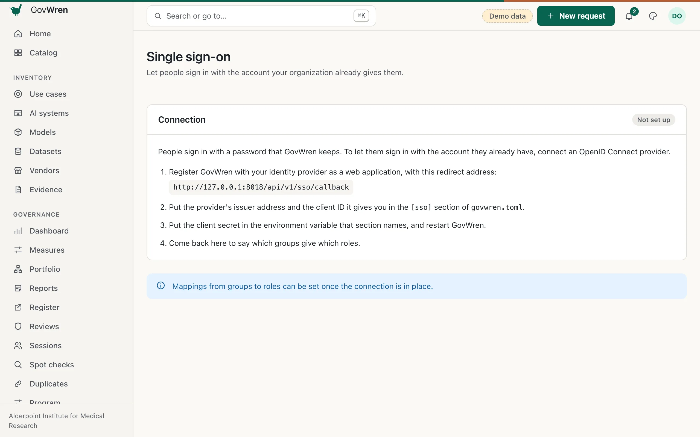
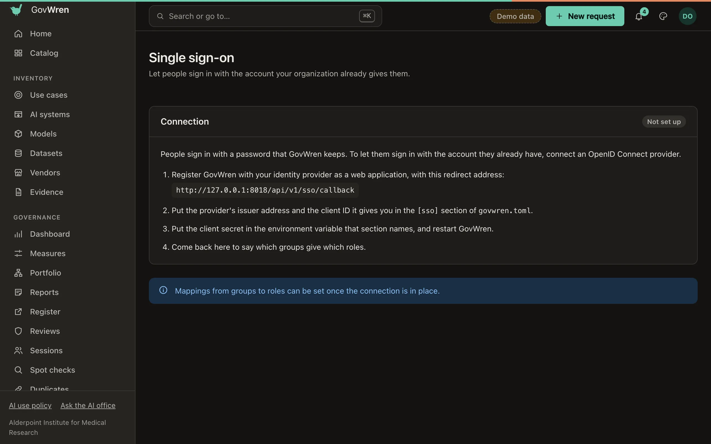

Single sign-on
GovWren can let people sign in with the account your organization already gives them, through any identity provider that speaks OpenID Connect. This guide sets it up, with the exact steps for Microsoft Entra ID, and explains how the provider's groups become roles in GovWren.
Single sign-on is optional. Without it, people sign in with a password that GovWren keeps, as described in Getting started.
How it works#
- A person chooses Sign in with your organization account on the sign-in page.
- GovWren sends the browser to your identity provider, which signs the person in as it always does.
- The provider sends the browser back with a one-time code. GovWren exchanges the code for a signed ID token and checks its signature, issuer, audience, expiry, and that it answers this sign-in and no other.
- GovWren finds the person's account, or creates it, and gives them the roles their groups map to.
GovWren uses the authorization code flow with PKCE. It accepts ID tokens signed with RS256 and refuses anything else. It never sees the person's password.
What you need#
- GovWren reachable at a stable
httpsaddress, set asbase_urlin the[server]section ofgovwren.toml. The provider sends people back to<base_url>/api/v1/sso/callback. - The right to register an application with your identity provider.
- A local administrator account in GovWren. You keep it as the way in if the provider is ever unreachable.
Set it up with Microsoft Entra ID#
1. Register GovWren#
In the Entra admin center, under App registrations, choose New registration.
| Field | Value |
|---|---|
| Name | GovWren |
| Supported account types | Accounts in this organizational directory only |
| Redirect URI | Platform Web, address https://govwren.example.org/api/v1/sso/callback (your own address) |
After it is created, note two values from its Overview page: the Application (client) ID and the Directory (tenant) ID.
2. Create a client secret#
Under Certificates & secrets, add a New client secret. Copy its Value now; it is shown once. Note when it expires: sign-in stops working on that day until you replace it.
3. Send groups or application roles in the token#
GovWren reads one claim from the ID token to learn what a person belongs to. Choose one of these.
Application roles (recommended). Under App roles, create a role for each kind of access, for example Governance, Auditor, PrivacyReviewer. Then, under Enterprise applications → GovWren → Users and groups, assign people or groups to those roles. Entra sends them in a claim named roles, by the role's Value. Names are stable and readable, and only what you assigned is sent.
Security groups. Under Token configuration, choose Add groups claim and select Security groups for the ID token. Entra sends them in a claim named groups, by each group's object ID. If a person is in more groups than fit in a token, Entra leaves the claim out. GovWren then leaves that person's roles as they were, and writes a line to its log, so that nobody loses access because of it. To avoid this, choose Groups assigned to the application in the same dialog.
4. Tell GovWren#
In govwren.toml:
[server]
base_url = "https://govwren.example.org"
[sso]
issuer = "https://login.microsoftonline.com/YOUR-TENANT-ID/v2.0"
client_id = "YOUR-APPLICATION-CLIENT-ID"
groups_claim = "roles" # or "groups", if you chose security groups
trust_email = truePut the client secret in the environment of the GovWren server, never in the file:
export GOVWREN_SSO_CLIENT_SECRET='the secret value'Then check and restart:
uv run govwren doctordoctor reads the provider's discovery document and says whether the secret is set.
trust_email = true is right for a single-tenant registration, because every address the tenant sends belongs to the person signing in. Entra does not mark addresses as verified, so without this setting GovWren would not join a first sign-in to an account that already exists. Leave it false for a provider that lets people enter any address they like.
5. Map groups to roles#
Sign in to GovWren as an administrator and open Admin → Single sign-on. The page shows the connection and the redirect address to register. Under Groups and roles, add a line for each group or application role:
| Group or application role | Role in GovWren | For |
|---|---|---|
Governance | Governance | Everywhere |
Auditor | Auditor | Everywhere |
PrivacyReviewer | Reviewer | Privacy |
NeuroscienceLeads | Steward of a unit | Neuroscience |
HaleLab | Member of a unit | Hale Lab |
Enter each value exactly as the provider sends it: the role's Value for application roles, or the object ID for security groups.


How accounts and roles behave#
- A person is recognized by the provider's own identifier for them (the token's subject), not by their email address. Changing someone's address at the provider does not create a second account.
- A first sign-in joins an existing account when the address the provider vouches for matches one an administrator created or imported earlier. Otherwise a new account is created, as an ordinary member.
- Roles from the provider are set again at every sign-in. Remove someone from a group and the role goes the next time they sign in. Add them and it appears.
- Roles given by hand under Admin → People are left alone. The two kinds are kept apart.
- Membership of a unit is added, never removed, by a mapping. Remove it under Admin → People when someone moves.
- The last administrator is never removed. If a mapping would leave GovWren with no administrator, that person keeps the role and the log says so.
- A disabled account stays out, whatever the provider says.
- Sign-out ends the GovWren session only. The person is still signed in at the provider.
Turn off passwords#
Once single sign-on works, you can stop password sign-in for everyone except administrators:
[sso]
local_sign_in = falseAdministrators keep their passwords as the way in when the provider cannot be reached. Keep at least one such account, with a long password stored somewhere safe.
Settings#
Key in [sso] | Default | Meaning |
|---|---|---|
issuer | "" | The provider's issuer address. Empty turns single sign-on off |
client_id | "" | The identifier the provider gave GovWren |
client_secret_env | "GOVWREN_SSO_CLIENT_SECRET" | The name of the environment variable that holds the client secret |
scopes | "openid profile email" | What GovWren asks the provider for. Must include openid |
groups_claim | "groups" | The claim that lists a person's groups or application roles |
label | "Sign in with your organization account" | The words on the sign-in button |
trust_email | false | Join existing accounts by the address the provider sends, even if it is not marked verified |
local_sign_in | true | false keeps password sign-in for administrators only |
When sign-in fails#
The sign-in page says only that it did not work. The reason is in GovWren's log, on a line beginning single sign-on.
| The log says | What to check |
|---|---|
| the client secret is not set | The environment variable named by client_secret_env is set for the server process |
| the identity provider refused the code | The client secret is current, and the redirect address registered at the provider is exactly <base_url>/api/v1/sso/callback |
| describes a different issuer | issuer matches the provider's discovery document exactly, including /v2.0 for Entra |
| the ID token was not accepted: meant for another application | client_id is this application's |
| did not send an email address it vouches for | Add the email scope or claim at the provider, or set trust_email for a provider you control |
| unknown or expired state | The person took more than ten minutes, or used the back button. Trying again works |
Try it without a real provider#
The repository includes a stand-in provider for development. It has a few sample people and no passwords, and its signing key is public, so it proves nothing about anyone. Never use it for real sign-in.
uv run python scripts/dev_identity_provider.py # http://127.0.0.1:8099[sso]
issuer = "http://127.0.0.1:8099"
client_id = "govwren-dev"
trust_email = trueStart GovWren with GOVWREN_SSO_CLIENT_SECRET=dev-secret. GovWren accepts an http issuer only on this machine.